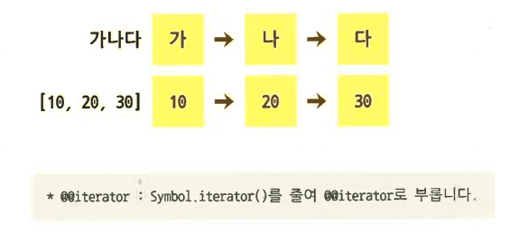
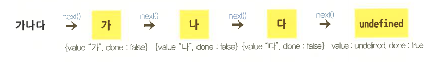
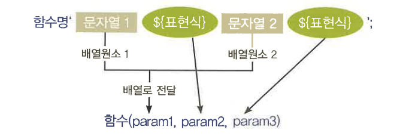
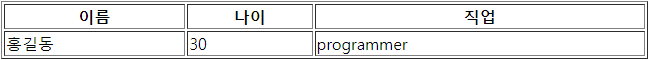
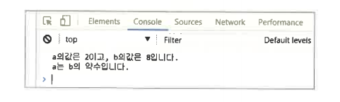
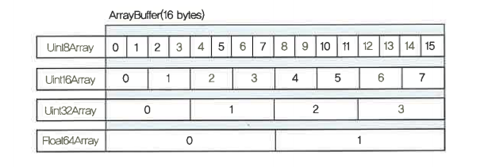
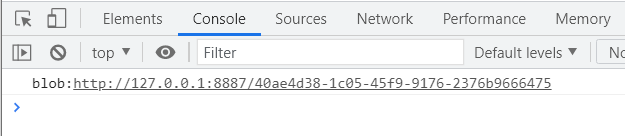

var a = 100; // 변수 a를 선언 function f(){ var a = 200; // 함수 블록안에서 같은 변수 a를 선언 console.log(a); // 여기서 a의 값은 200 } f(); console.log(a); // 여기서 a의 값은 100
var a = 100; // 변수 a를 선언 if(a > 0){ var a = 200; // 함수 블록안에서 같은 변수 a를 선언 console.log(a); // 여기서 a의 값은 200 } console.log(a); // 여기서 a의 값은 200
- 이처럼 var는 함수 이외 블록에서는 변수가 공유됨을 볼 수 있다. let은 이를 보완하여 블록 안쪽에서 스코프 설정이 되도록 하고 있다. 위의 예를 let으로 변경하여 살펴보자.
let a = 100; // 변수 a를 선언 if(a > 0){ let a = 200; // 함수 블록안에서 같은 변수 a를 선언 console.log(a); // 여기서 a의 값은 200 } console.log(a); // 여기서 a의 값은 100
- var는 반복문 안에서 변수가 공유되는 문제가 있었는데, let으로 이를 개선, 비동기 함수를 호출할 경우 문제가 될 수 있는 경우를 방지할 수 있다.
- 다음 코드를 살펴보자
- 이는 비동기인 setTimeout 함수 콜백이 공유되어 실행 시점이 반복문보다 늦으므로 변수의 값이 모두 10이 되었다
for(var i=0; i<10; i++){
setTimeout(function(){ // 반복문이 진행되면서 setTimeout 함수를 호출
console.log(i); // 결과값은 10
}, 100);
}
for(let i=0; i<10; i++){ setTimeout(function(){ // 반복문이 진행되면서 setTimeout 함수를 호출 console.log(i); // 결과값은 0,1,2,3,4,5,6,7,8,9 }, 100); }
- var는 같은 스코프 내에서 변수 중복 선언 시 이전에 선언된 변수가 덮어씌워지지만, let은 이를 허용하지 않도록 변경하기 때문에 변수 중복 선언 시 다음과 같은 SyntaxError가 발생한다.
function f(){
let a = 100;
let a = 200; // SyntaxError 발생
}
- var는 함수 끌어올림(hoisting)이 되어 아래 코드와 같은 상황에서 에러가 발생하지 않는다. 이는 자바스크립트의 함수 호출 처리 방식에 의해서 발생하는 현상이다.
- 함수 끌어올림(hoisting) : 자바스크립트가 실행될 때 변수 선언문이나 함수 선언문을 읽기 전에 선언된 변수와 함수들을 다른 무엇보다도 먼저 읽어 Scope의 최상위에 위치시킨다.
foo();
function foo(){}; // 함수선언문이 끌어올려짐
실행 : http://127.0.0.1:8887/ex02_08.html (실제 실행 X : 의미만 이해할 것!)
function f(){
console.log(a); // 구문상 선언 전인 변수의 값이 출력된다. 출력값은 100
var a = 10;
};
실행 : http://127.0.0.1:8887/ex02_09.html (실제 실행 X : 의미만 이해할 것!)
function f(){
console.log(a); // 선언 전인 변수에 접근하자 ReferenceError 발생
let a = 10;
};
- 상수의 특징은 변수와는 달리 선언 시에 반드시 초기값을 할당해줘야 하며，한번 선언된 상수값은 변경할 수 없는 불변(Immutable)값이다. 즉，변경되지 않을 상수는 const로 정의하면 된다.
const MY_NAME; // 초기값을 할당하지 않아 SyntaxXrror 발생 const MY_NAME = "Kim"; MY_NAME = "Lee"; // 값을 변경하려 하면 TypeError 발생
- 상수명의 표기는 대체적으로 대문자만을 사용하고，단어 사이에 언더바(_)를 넣어 구분 한다. 이는 쉽게 상수를 구별할 수 있는 방법이다.
- 상수는 let과 같은 스코프 설정 규칙을 갖으며，상수 또한 중복 선언과 함수 끌어올림 (hoisting)이 되지 않도록 하는 엄격한 규정을 갖는다.
- var, let, const의 차이점
| var | let | const | |
|---|---|---|---|
| 스코프 | 함수 | 블록 | 블록 |
| 스코프내 중복 선언 | 가능 | 불가능 | 불가능 |
| 끌어올림(hoisting) | 일어남 | 일어나지않음 | 일어나지않음 |
| 값 변경 | 가능 | 가능 | 불가능(immutable) |
ecma6\complete\chapter2\2-1\ex01.html | http://127.0.0.1:8887/chapter2/2-1/ex01.html
ecma6\complete\chapter2\2-1\ex02.html | http://127.0.0.1:8887/chapter2/2-1/ex02.html
<!DOCTYPE html>
<html>
<head>
<title>let과 const</title>
<script type="text/javascript">
(function(){
var a = 100;
switch(a){
case 100:
var a = 200;
// switch문 블록 안에 같은 변수 a를 선언
break;
}
console.log(a);
// a의 값은 200, var로 변수 선언 시 switch문의 블록 안에서 스코프 설정이 일어나지 않기
// 때문에 switch문 안팎의 변수가 공유되며 밖의 변수는 안의 변수에 의해 덮어씌워져 출력된
// 변수의 값은 200이 된다.
})();
(function(){
let a = 100;
switch(a){
case 100:
let a = 200;
// switch문 블록 안에 같은 변수 a를 선언
break;
}
console.log(a);
// a의 값은 100, let로 변수 선언 시 switch문의 블록 안에서 스코프 설정이 일어나기 때문에
// switch문 안팎의 변수가 공유되지 않고 밖의 변수는 안의 변수에 의해 영향을 받지 않아 출력
// 변수의 값은 100이 된다.
})();
</script>
</head>
<body>
</body>
</html>
- 이터러블 규약(Iterable Protocol)은 ES6에서 새로 추가된 for...of 문을 실행하여 반복 될 때(iteration) 값이 열거(enumerable)되며, 내부적으로 *@@iterator 메서드가 구현 되어 있어야 하는 규약이다. 자바스크립트 내장 객체 중 Array, String, Map, Set, 함 수의 arguments 객체(Object는 제외) 등이 이터 러블 규약을 따르며 이를 '이터 러블 객체 (Iterable Object)'라고 한다. 이들 모두 for...of 문을 통해 열거가 가능하지만, 열거되는 방식에는 차이가 있다.
- 기존에 알고 있는 Array와 String을 예로 들어 보면, String의 경우 다음 그림과 같이 한 글자씩 열거가 되고, Array나 함수의 arguments 객체는 원소 하나씩 열거가 된다.

- String iteration
let str = '가나다';
for(let value of str){
console.log(value); // 출력되는 값은 가, 나, 다 (문자열 값을 순차적으로 한글자씩 전달)
}
- Array iteration
let arr = [10, 20, 30];
for(let value of arr){
console.log(value); // 출력되는 값은 10, 20, 30 (배열의 원소를 순차적으로 전달)
}
다음 단원에서 자세히 설명
- 위의 String과 Array은 열거 방식에는 차이가 있다. 이를 공통화하기 위해 내부적으로 각각 @@iterator 메서드를 구현하고 있다.
- 그러므로，이터러블 객체에는 반드시 @@iterator 메서드가 구현되어 있어야 한다. @@iterator 메서드는 객체의 속성 또는 prototype chain의 객체 중 하나가 속성으로 Symbol, iterator 키를 가져야 한다.
- 다음은 내장된 @@ iterator 메서드의 예 이다.
let str = '가나다'; let iterator = str[Symbol.iterator]();
- 이터러블 객체는 내장 객체뿐만 아니라 직접 @@iterator 메서드만 구현해주면 이터러 블 객체의 생성이 가능하다.
let iterable = {
[Symbol.iterator]:function(){ // @@iterator 메서드 추가 이터레이터 전달
}
}
- 여기서 등장한 Symbol과 for...of 문 등은 다음 단원에서 자세히 설명한다.
- 이터레이터 규약(Itemtor Protocol)은 이터러블 규약(Iterable Protocol)과 마찬가지로 값이 열거 되지만，next 메서드를 통해서 하나씩 순차적으로 열거되어야 하는 규약이다. 이때 열거 되는 값의 형태는 객체이며 속성으로 value와 done을 갖는다. value는 실제 값이 할당되며，done은 열거의 끝임을 알려주는데，열거가 끝인 경우 값은 true를，그렇지 않을 경우 false를 전달한다. 이터레이터 규약을 따르는 객체를 모두 이터레이터 객체라고 부르며, 이터레이터 객체는 직접 구현하거나 내장된 @@iterator 메서드를 통해서 전달 받을 수 있다.

- 다음 코드는 배열에서 @@iterator 메서드를 호출하여 이터레이터 객체를 전달받는 예 이다.
let arr =[1, 2, 3]; // 내장된 @@iterator 메서드를 호출하여 이터레이터 객체를 전달받음 let iterator = arr[Symbol.iterator](); iterator.next(); // {value:1, done:false} iterator.next(); // {value:2, done:false} iterator.next(); // {value:3, done:false} iterator.next(); // {value:undefined, done:true} // 순차적으로 열거 뒤의 value 값은 undefined, done은 true
- 이터레이터 객체는 직접 구현하여 사용할 수 있다. 다음은 이터레이터 객체를 구현 한 예 이다.
let iterator = {
i:1,
next:function(){
return (this.i < 4) ? {value:this.i++, done:false} : {value:undefined, done:true};
// 1의 값이 4보다 작을때까지 1씩 증가하여 값을 전달하고 모두 전달한 뒤에 done은 true
}
}
iterator.next(); // {value:1, done:false}
iterator.next(); // {value:2, done:false}
iterator.next(); // {value:3, done:false}
iterator.next(); // {value:undefined, done:true}
// 순차적으로 열거 뒤의 value 값은 undefined, done은 true
- 이터러블 규약과 이터레이터 규약을 표로 정리
| 정의 | 규약을 따르는 객체 | |
|---|---|---|
| 이터러블 규약 | for...of 문을 통해 열거되어야 하고, @@iterator 메서드를 구현 | 자바스크립트 내장 객체 중 Array, String, Map, Set, 함수의 arguments 객체(Object는 제외)등 |
| 이터레이터 규약 | next 메서드 호출 시 순차적으로 열거되며, 열거된 값이 객체({value: 값, done: 열거 완료 여부})여야 함 | 이터레이터 규약을 따르도록 구현하거나, 이터러블 객체로 부터 @@iterator 메서드를 호출하여 참조 가능함 |
ecma6\complete\chapter2\2-2\ex01.html | http://127.0.0.1:8887/chapter2/2-2/ex01.html
- 문자열 “iterator”가 한글자씩 열거되어 출력되었고, 전부 열거 후 done 속성은 true가 되어 열거가 끝났음을 알려준다.
<!DOCTYPE html>
<html>
<head>
<title>이터러블 규약과 이터레이터 규약</title>
<script type="text/javascript">
let str = "iterator";
let iterator = str[Symbol.iterator]();
let result;
do{
// 이터레이터 객체에 next() 메서드를 호출하여 문자열을 순차적으로 열거
result= iterator.next();
// 열거한 값을 출력
console.log(result.value, result.done);
}
// value 속성이 존재하면 계속 loop
while(result.value);
</script>
</head>
<body>
</body>
</html>
ecma6\complete\chapter2\2-2\ex02.html | http://127.0.0.1:8887/chapter2/2-2/ex02.html
<!DOCTYPE html>
<html>
<head>
<title>이터러블 규약과 이터레이터 규약</title>
<script type="text/javascript">
let iterator = {
i:1,
// 이터레이터 규약을 따르기 위해 객체에 iterator 메서드를 선언
[Symbol.iterator]:function(){
// iterator [Symbol. iterator]() 다음과 같이 호출이 되도록 this 를 반환
return this;
},
// next 메서드 호출 시 속성으로 value와 done을 갖는 객체를 전달
// 이터레이션이 진행중이라면 done은 false, 종료되었다면 done은 true
next:function(){
return (this.i < 4) ? {value:this.i++, done:false} : {value:undefined, done:true};
}
}
console.log(iterator.next());
console.log(iterator.next());
console.log(iterator[Symbol.iterator]().next());
console.log(iterator[Symbol.iterator]().next());
</script>
</head>
<body>
</body>
</html>
- for...of 문은 기존에 배열이나 함수의 arguments 객체와 같은 컬렉션을 순회하는 for...in 문이 나 forEach() 함수와 같은 역할을 한다. 뿐만 아니라 문자열을 한 글자씩 잘라 순회하거나 destructing 등이 가능해 졌다. 이런 많은 타입들을 순회하기 위해서 이터러블 규약을 따르도록 하고 있다. 그러므로 for...of 문으로 순회하려면 @@iterator 메서드를 내장한 객체이거나, 직접 @@iterator 메서드를 구현해 주어야 한다.
- for...of 문의 작성 법은 아래와 같다.
for(variables of iterable){
...
}
| variables | for...of 문이 순환될 때 전달되는 값 예를 들면 배열의 경우 원소값, 문자열의 경우 한 글자씩 전달. NodeList의 경우 Node를 전달해 준다. |
|---|---|
| iterable | for...of 문으로 순회할 이터러블 객체 Array, String, Map, Set, generator, DOM NodeList 등 이러터블 규약을 따르는 객체 |
let str = 'for of문'; // 순회시킬 문자열
- 순회전 문자열은 이러터블 규약을 따르는지 확인해 보기 위해서 문자열이 @@interator 메서드가 구현되어 있는지 확인해 보자. @@interator 메서드 호출 시 이터레이터 객체를 반환하므로 타입은 객체여야 한다.
console.log(typeof str[Symbol.iterator]() ==='object'); // 결과는 true
- 문자열이 이터러블 규약을 따르는 것이 확인되었으니, for...of 문으로 순회 가능하다고 볼 수 있다. 다음 코드는 for...of 문으로 문자열을 순회하도록 작성하였다.
for(let value of str){
console.log(value); // 결과는 f, o, r, , o, f, 문
}
- 순회 결과 문자열을 한 글자씩 순차적으로 전달함을 볼 수 있다.
- 기존에도 컬렉션을 순회하는 방법은 존재하였다. for...in 문도 이와 비슷한 역활을 해준다. 하지만 for...in 문의 경우 배열을 순회할 때 몇 가지 문제점이 존재한다. 예를 들어 배열에 속성을 추가하는 경우 추가된 속성도 순회하는데 포함을 시킨다.
var arr = [10, 20, 30];
arr.add = 100;
for(var i in arr){
console.log(i); // 결과는 0, 1, 2, add
}
- 배열을 순회하였을 때 얻고자 하는 결과는 배열 원소의 index일 것이다. 하지만, 실제 for...in 문은 객체를 순회하면서 속성명을 문자열로 알려주는 역할을 한다. 그렇기에 배열을 for...in 문으로 순회하는 것은 위험할 수 있다.
- for...in 문은 또 한 가지 문제점을 가지고 있다. 위에서 살펴본 것처럼 for...in 문으로 배열을 순회시 배열객체의 속성명을 문자열로 알려주기 때문에 원소의 index + 1과 같은 연산시 문자열로 된다.
- 예를 들어 배열을 for...in 문으로 순회하고 원소의 index를 얻어 index + 1과 같은 연산처리를 하였을 때 1 + 1 = 2 가 아닌 '1' + 1 = '11' 의 결과가 된다.
- for...of 문은 위의 문제점들을 개선하였으며, 배열 순회시에 직관적으로 원소의 값만 전달해 준다. 다음 예를 보면 배열에 임의의 속성을 추가하여 순회하여도 정확히 배열 원소의 값만 전달해 주고 있다.
let arr = [10, 20, 30]; arr.add = 100; for(let value of arr){ console.log(value); // 결과는 10, 20, 30 }
- for...of 문과 for...in 문의 차이를 표로 정리
| Array 순회 시 문제점 | |
|---|---|
| for...of 문 | Array 순회 시 속성을 포함하지 않고, 원소만 전달하여, for...in 문의 단점을 보완함 |
| for...in 문 | Array 순회 시 속성을 포함하여 명확하지 않음. 순회 시 전달 값이 Array의 원소가 아닌 index |
<!DOCTYPE html>
<html>
<head>
<title>for...of문</title>
<script>
let iterable = {
i:1,
[Symbol.iterator]:function(){
return this;
},
next:function(){
return (this.i < 4) ? {value:this.i++, done:false}
: {value:undefined, done:true};
}
}
console.log(iterable.next());
console.log(iterable.next());
console.log(iterable[Symbol.iterator]().next());
console.log(iterable[Symbol.iterator]().next());
</script>
</head>
<body>
</body>
</html>
- 위의 콘솔 부분을 다음과 같이 수정한다.
ecma6\complete\chapter2\2-3\ex01.html | http://127.0.0.1:8887/chapter2/2-3/ex01.html
<!DOCTYPE html>
<html>
<head>
<title>for...of문</title>
<script>
let iterable = {
i:1,
[Symbol.iterator]:function(){
return this;
},
next:function(){
return (this.i < 4) ? {value:this.i++, done:false}
: {value:undefined, done:true};
}
}
// for...of문으로 이터러불 객체를 순회하고 값을 얻는다.
for(let value of iterable){
// 결과값을 출력
console.log(value);
}
</script>
</head>
<body>
</body>
</html>
- 템플릿 *리터럴(Template literals)은 문자열 안에 표현식을 포함시킬 수 있고, 여러 줄 작성을 허용하여 간편하게 문자열을 만들 수 있도록 해준다.
- 템플릿 리터럴은 문자열과 다르게 따옴표 대신 역따옴표(" ") 문자 사이에 작성하며, 달러와 중괄호 ($ {})를 포함시킬 수 있다.
- 중괄호(${}) 사이에는 표현식을 쓸 수 있으며, 표현식의 결과는 문자열에 연결된다. 또 한 템플릿 리터럴 앞에 함수명 (태그 표현식)이 있으면 앞서 설명과는 달리 앞의 함수를 호출한다. 이때 템플릿 리터럴의 값이 함수에 전달되며, 함수에서 값을 조작하여 템플릿 문자열을 출력 할 수 있다. 이를 '태그드 템플릿 리터럴 (Tagged template literals)'이라고 한다.
>> 리터럴이란? |
- 문자열을 여러 줄로 작성하려면 줄 바꿈 문자(\n)를 입력해야 가능했고, 실제 코드에서는 한 줄로 작성하거나 (+)연산자를 사용하여 줄 바꿈을 할 수 있었다. 템플릿 리터럴은 (+)연산자 없이 여러 줄 작성이 가능하고, 줄 바꿈 시 자동으로 (\n)문자를 입력해 준다.
- 다음은 일반 문자열을 이용해 여러 줄 작성 시 한 줄로 작성하는 예와 코드를 줄 바꿈 하여 작성하였을 때를 비교해 보고 또한 템플릿 리터럴을 사용하여 여러 줄 작성의 예 를 살펴본다.
var str = '여러 줄\n 입력 테스트'; console.log(str); // 결과는 '여러 줄 입력 테스트'
var str = '여러 줄\n';
str += ' 입력 테스트';
console.log(str); // 결과는 '여러 줄
입력 테스트'
let str = '여러 줄 입력 테스트'; console.log(str); // 결과는 '여러 줄 입력 테스트'
- 일반 문자열에 표현식을 삽입하려면 문자열을 끝맺음하고 (+) 연산자로 표현식을 연결하여 작성해 주어야 했다, 템플릿 리터럴은 문자열 끝맺음 없이 보간 표현법을 이 용하여 보다 쉽게 작성이 가능해졌다. 일반 문자열에서 표현식 작성과 템플릿 리터럴에서의 표현식 작성이 어떻게 다른지 살펴보자.
var a = 100;
var b = 200;
var str = 'a+b의 결과는 ' + (a + b) + ' 입니다.'; // 결과는 'a+b의 결과는 300입니다.'
let a = 100; let b = 200; let str = 'a+b의 결과는 ${a + b}입니다.'; // 결과는 'a+b의 결과는 300입니다.'
- 태그드 템플릿 리터럴(Tagged template literal)은 템플릿 리터럴과 구분하여 사용한다. 둘은 전혀 다른 동작을 보여 주는데, 템플릿 리터럴의 경우 여러 줄 작성과 보간 표현법을 쓸 수 있도록 해준다면 태그드 템플릿 리터럴은 표현식(함수명) 옆에 템플릿 리터럴이 올 경우 함수를 호출한다.
- 함수의 인수로 템플릿 문자열이 전달되며, 보간 표현법이 있는 경우 보간 표현법을 앞뒤로 나누어 문자열이 배열로 전달된다. 보간 표현법의 표현식의 값은 따로 인수에 전달된다. 다음 그림은 태그드 템플릿 리터럴 구문의 동작을 이해하기 쉽도록 표현해 주었다.

- 다음 코드는 태그드 템플릿 리터럴 구문을 활용하여 문자열 구문의 값을 비교하여 문장을 완성해 주는 예 이다.
<!DOCTYPE html>
<html lang="ko">
<head>
<meta charset="UTF-8">
<title>Document</title>
<script>
function tagged(str, a, b){ // 템플릿 리터럴 구문에 의하여 호출
// 매개변수 str의 값은 ['A와 B 둘 중']
// 매개변수 a의 값은 100
// 매개변수 b의 값은 200
let bigger;
(a > b) ? bigger = 'A' : bigger = 'B';
// a의 값이 클 경우 bigger의 값은 문자열 'A'를
// 아닐 경우 문자열 'B'가 됨
return str[0] + bigger + '가 더 큽니다.' ;
}
let a = 100;
let b = 200;
// tagged 함수 호출
let str = tagged `A와 B 둘 중 ${a}, ${b}`; // 홋따옴표('')가 아니라 역따옴표(``)임을 주의
console.log(str); // 결과는 'A와 B 둘 중 B가 더 큽니다.'
</script>
</head>
<body>
</body>
</html>
- 문자열과 템플릿 리터럴의 차이점을 비교 정리한 표
| 작성법 | 표현식 작성 | 여러 줄 작성 | |
|---|---|---|---|
| 문자열 | 쌍따옴표 ("") 또는 홑따옴표 ('') 사이에 작성 | +연산자를 사용하여 작성 | 문자열 줄 바꿈시에는 줄 바꿈 문자(\n)을 사용하여 작성 코드를 여러 줄로 작성 시에는 (+)연산자를 사용하여 작성 |
| 템플릿 리터럴 |
역따옴표 (``) 사이에 작성 | 보간 표현법을 사용하여 작성 | 문자열 줄 바꿈 또는 여러 줄 작성 시 내려쓰기 하여 작성 |
- 먼저 예제 파일을 열어 코드를 보면, user 객체의 속성값을 변수 html의 문자열에 포함하여 table에 출력하도록 작성되어 있다. 예제를 실행하여 작성된 코드의 결과를 보면 table에 작성한 값이 잘 나오고 있다.

- 다시 소스 코드로 돌아와 16라인을 보면 html 변수에 문자열과 user객체의 값이 포함되어 있는데, 이 부분의 코드를 템플릿 리터럴로 작성해 보자. user객체의 속성값은 보간 표현법을 사용하여 작성해 주면 보다 쉽게 수정할 수 있다.
<!DOCTYPE html>
<html>
<head>
<title>템플릿 리터럴(Template literals)</title>
<style type="text/css">
#user table{width:100%;}
</style>
<script type="text/javascript">
var user = {
name: '홍길동',
age: 30,
job: 'programmer'
};
window.onload = function(){
var html = '<table border="1">'; // 16라인 : 문자열을 템플릿 리터럴로 변경
html += '<thead>';
html += '<tr>';
html += '<th>이름</th>';
html += '<th>나이</th>';
html += '<th>직업</th>';
html += '</tr>';
html += '</thead>';
html += '<tbody>';
html += '<tr>';
html += '<td>' + user.name + '</td>';
html += '<td>' + user.age + '</td>';
html += '<td>' + user.job + '</td>';
html += '</tr>';
html += '</tbody>';
html += '</table>';
document.getElementById('user').innerHTML = html;
}
</script>
</head>
<body>
<div id="user"></div>
</body>
</html>
- 16라인의 코드를 다음과 같이 수정한다. 수정 전보다 작성도 쉽고 가독성도 높아졌다.
ecma6\complete\chapter2\2-4\ex01.html | http://127.0.0.1:8887/chapter2/2-4/ex01.html
<!DOCTYPE html>
<html>
<head>
<title>템플릿 리터럴(Template literals)</title>
<style type="text/css">
#user table{width:100%;}
</style>
<script type="text/javascript">
var user = {
name: '홍길동',
age: 30,
job: 'programmer'
};
window.onload = function(){
var html = `<table border="1">
<thead>
<tr>
<th>이름</th>
<th>나이</th>
<th>직업</th>
</tr>
</thead>
<tbody>
<tr>
<td>${user.name}</td>
<td>${user.age}</td>
<td>${user.job}</td>
</tr>
</tbody>
</table>`;
document.getElementById('user').innerHTML = html;
}
</script>
</head>
<body>
<div id="user"></div>
</body>
</html>
- 먼저 작성된 코드는 a가 b의 약수인지를 확인하여 결과를 출력해 주고 있다. 작성된 코드를 브라우저에서 실행시키고 개발자도구의 Console에서 확인해 보자.

- 다시 소스 코드를 살펴보면, 4라인의 sum 함수는 매개변수 a가 b의 약수인지를 확인하여 결과를 반환해 주고, 12라인의 변수 value의 값인 문자열은 (+)연산자를 통해서 문자열을 이어 쓰고 있다. 12라인의 문자열을 태그드 템플릿 리터럴로 변경하고, 4라인의 sum 함수의 결과를 템플릿 리터럴 구문으로 수정해보자.
<!DOCTYPE html>
<html>
<head>
<title>템플릿 리터럴(Template literals)</title>
<script type="text/javascript">
var a = 2;
var b = 8;
function sum(a, b){ // 함수안의 파라메터를 템플릿 리터럴로 변경
var value = b % a;
var result;
(value == 0) ? result = 'a는 b의 약수입니다.' : result = 'a는 b의 약수가아닙니다.';
return result;
}
// value의 값을 태그드 템플릿 리터럴 구분으로 변경
var value = 'a의값은 ' + a + '이고, b의값은 ' + b + '입니다.\n' + sum(a, b);
console.log(value);
</script>
</head>
<body>
</body>
</html>
- 4라인의 sum 함수의 파라미터와 12라인의 value의 값을 다음과 같이 수정해 준다. 수정 전보다 작성도 쉽고 가독성도 높아졌다.
ecma6\complete\chapter2\2-4\ex02.html | http://127.0.0.1:8887/chapter2/2-4/ex02.html
<!DOCTYPE html>
<html>
<head>
<title>템플릿 리터럴(Template literals)</title>
<script type="text/javascript">
var a = 2;
var b = 8;
// 매개변수 str은 10라인의 템플릿 문자열이 나누어 배열로 전달됨
function sum(str, a, b){
// result의 값을 템플릿 리터럴로 변경하여 보다 간결하게 변경됨
var result = `${str[0]}${a}${str[1]}${b}${str[2]}
${(b%a==0)? 'a는 b의 약수입니다.':'a는 b의 약수가아닙니다.'}`;
return result;
}
// value의 값을 태그드 템플릿 리터럴로 변경하여 가독성을 높임
var value = sum`a의값은 ${a}이고, b의값은 ${b}입니다.`;
console.log(value);
</script>
</head>
<body>
</body>
</html>
- 타입 배열 (Typed Array)은 배열과 매우 유사한 객체이지만，이진 데이터(Binary Data)를 보다 빨리 접근하고 조작하도록 하기 위해 추가되었다. 최근 자바스크립트 에서 파일을 불러와 처리하거나, 오디오나 비디오 처리를 위해 이진데이터 접근이 많 아짐에 따라 유용하게 사용되고 있다.
- 배열은 원소의 개수가 가변적이며, 모든 값을 허용하는 반면, 타입 배열은 이진 데이 터만 값으로 허용하며, 원하는 비트를 선택할 수 있다. 또한 타입 배열은 대부분의 배 열 API를 동일하게 제공하지만, push나 pop 등의 API는 제공되지 않는다.
타입 배열은 버퍼와 뷰로 나뉘는데，버퍼(ArrayBuffer)는 단순히 데이터 청크를 나타내는 객체이며, 스스로 읽고 쓸 수 없고，뷰를 통해서 저장된 데이터를 조작할 수 있다. 다음 단락에서 버퍼와 뷰에 대해 좀 더 자세히 살펴본다.
- 버퍼(AirayBuffer)는 ArrayBuffer 클래스의 생성자 객체이며 클래스 호출 시 지정한 바이트 크기의 버퍼가 생성된다. 버퍼는 직접적으로 데이터의 조작이 불가능하지만 특정 타입의 뷰 생성자 객체를 통해서 데이터를 읽거나 쓰기가 가능하다.
- 다음 코드는 ArrayBuffer 클래스를 호출하여 16바이트 버퍼를 생성하는 예 이다.
const buffer = new ArrayBuffer(16); // 16바이트 버퍼 생성 console.log(buffer.byteLength); // 결과는 16 : byteLength 속성으로 버퍼의 바이트 조회
- 뷰(Typed array views)는 유형 별로 여러 클래스를 제공하는데 Inti6, Uint32, Float64 등 대부분 숫자형이며，UintClamedArray는 별도로 0~255사이의 숫자를 허용하는 형 이다.
- 뷰는 클래스 호출 시 지정한 버퍼의 바이트만큼 담을 수 있는 배열형태의 생성자를 만들며，클래스 이름의 비트에 따라 원소의 수가 결정되고, 초기값으로 0을 지정한다.
| 바이트 | 값의 범위 | 설명 | |
|---|---|---|---|
| Int8Array | 1 | -128 ~ 127 | 8비트 정수형 |
| Uint8Array | 1 | 0 ~ 255 | 8비트 양의 정수형 |
| Uint8ClampedArray | 1 | 0 ~ 255 | 8비트 양의 정수형(0~255사이의 숫자만 허용) |
| Int16Array | 2 | -32768 ~ 32767 | 16비트 정수형 |
| Uint16Array | 2 | 0 ~ 65535 | 16비트 양의 정수형 |
| Int32Array | 4 | -2147483648 ~ 2147483647 | 32비트 정수형 |
| Uint32Array | 4 | 0 ~ 4294967295 | 32비트 양의 정수형 |
| Float32Array | 4 | 1.2 X 10-38 ~ 3.4 x 10+38 | 32비트 부동소수점형 |
| Float64Array | 8 | 5.0 x 10-324 ~ 1.8 x 10+308 | 64비트 부동소수점형 |
- 다음 코드는 16바이트 버퍼를 생성하여, 32비트 정수형 뷰를 선언하고 버퍼를 지정한다. 16바이트를 비트로 바꾸면 128비트(16 X 8)이므로, 32비트 뷰에서는 4개로 나뉘어(128 / 32 = 4) 원소 4개의 초기값이 0인 32비트 양의 정수형 배열이 된다.
<!DOCTYPE html>
<html lang="ko">
<head>
<meta charset="UTF-8">
<title>Document</title>
<script>
const buffer = new ArrayBuffer(16); // 16바이트 버퍼 생성
const view = new Uint32Array(buffer); // 양의 정수형 32비트 뷰를 선언하고 버퍼를 지정
console.log(view); // 결과는 Unit32Array(4) [0,0,0,0]가 출력
</script>
</head>
<body>
</body>
</html>
- 다음 그림은 16바이트 버퍼를 여러 유형의 뷰에 대입하였을 때의 예 이다.

- 타입 배열은 배열과 유사한 객체이며, 이진 데이터(Binary Data)를 보다 빨리 접근하고 조작할 수 있다.
타입 배열은 버퍼와 뷰로 나뉘는데 버퍼(ArrayBuffer)는 단순히 데이터 청크를 나타내는 객체이며, 스스로 읽고 쓸 수 없고, 뷰를 통해서 저장된 데이터를 조작할 수 있다.
- RGB 코드는 0 ~ 255 사이의 값이 세 개로 연결된 리스트이다. 버퍼와 뷰를 생성하여 RGB 코드를 입력받는 타입 배열을 만들어 보자. 다음 코드는 0 ~ 255 사이의 값만 입력 받도록 Uint8ClampedArray을 생성하고, 3바이트 버퍼를 지정하였다.
- 3바이트 버퍼는 24비트이므로 8비트 정수형 배열에서 3개의 원소를 갖는다. 타입 배열에 각각 0 ~ 255 사이의 랜덤값을 입력하여 생성한 RGB 값을 body 태그에 backgroundColor style을 지정해 주었다.
ecma6\complete\chapter2\2-5\ex01.html | http://127.0.0.1:8887/chapter2/2-5/ex01.html
<!DOCTYPE html>
<html>
<head>
<title>타입배열(Typed Array)</title>
</head>
<body>
<script>
const buffer = new ArrayBuffer(3);
const rgb = new Uint8ClampedArray(buffer);
rgb[0] = parseInt(Math.random(255) * 100);
rgb[1] = parseInt(Math.random(255) * 100);
rgb[2] = parseInt(Math.random(255) * 100);
document.body.style.backgroundColor = `rgb(${rgb[0]}, ${rgb[1]}, ${rgb[2]})`;
</script>
</body>
</html>
- 다음 코드는 16바이트 버퍼를 지정한 16비트 양의 정수형 배열로 Blob을 생성하였다.
ecma6\complete\chapter2\2-5\ex02.html | http://127.0.0.1:8887/chapter2/2-5/ex02.html
<!DOCTYPE html>
<html>
<head>
<title>타입배열(Typed Array)</title>
<script>
var buffer = new ArrayBuffer(16);
var view = new Int16Array(buffer);
var blob = new Blob([view], {type: 'application/octet-binary'});
var url = URL.createObjectURL(blob);
console.log(url);
</script>
</head>
<body>
</body>
</html>
- 브라우저의 콘솔을 확인해 보면 생성한 Blob의 url은 다음과 같이 출력된다.

- URL.createObjectURL()은 Blob 객체를 나타내는 URL를 포함한 다음과 같은 DOMString를 생성한다. (blob:URL)
- 이 Blob URL은 생성된 window의 document에서만(브라우저) 유효하다.
- 다른 window에서 재활용할 수 없으며, URL의 수명이 한정되어 있기 때문에 file:URL과 다르게 보안 이슈에서 벗어날 수 있다.
blob:http://localhost:1234/28ff8746-94eb-4dbe-9d6c-2443b581dd30
<img src="blob:http://localhost:1234/28ff8746-94eb-4dbe-9d6c-2443b581dd30" alt="Blob" />